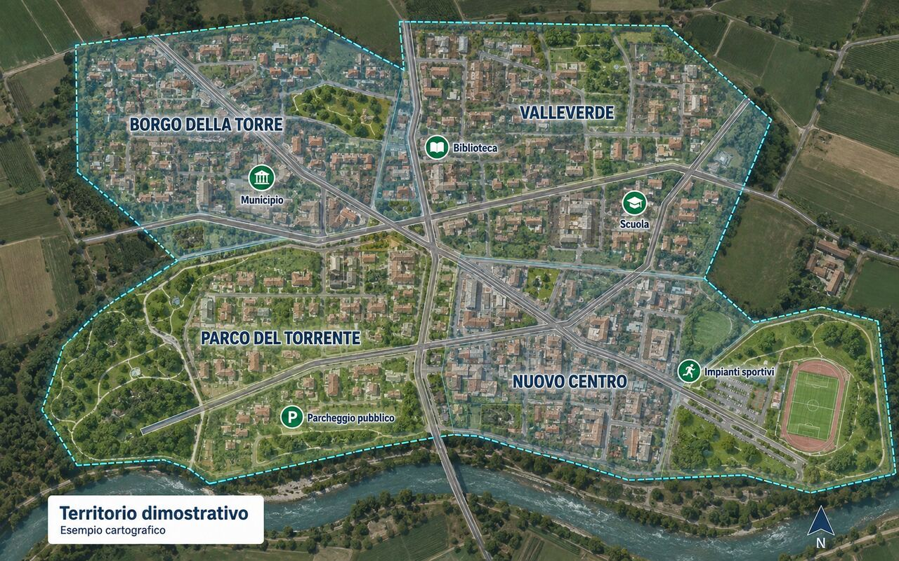

Consultazione via browser
Nessuna installazione specifica per chi deve consultare mappe e informazioni.
GeoHub Maps
Realizziamo portali cartografici accessibili da browser per studi tecnici, aziende, enti e organizzazioni che lavorano con il territorio.
GeoHub configura database, server, utenti, permessi e pubblicazione dei progetti, quindi segue aggiornamenti e assistenza prevalentemente da remoto.

Vantaggi operativi
Il WebGIS riduce invii di PDF e file pesanti e rende disponibili mappe aggiornate a tecnici, collaboratori, clienti o cittadini.
Nessuna installazione specifica per chi deve consultare mappe e informazioni.
Contenuti pubblici, riservati o separati per progetto e committente.
I dati possono essere gestiti in QGIS e pubblicati nel portale concordato.
Ricerca, identificazione degli oggetti e consultazione degli attributi.
Integrazione con PostgreSQL/PostGIS per evitare copie disallineate.
Server, HTTPS, aggiornamenti, backup e assistenza seguiti da GeoHub.
Il WebGIS può utilizzare un database PostgreSQL/PostGIS, essere protetto dal servizio di backup e monitoraggio e affiancare il cloud documentale.
Come lavoriamo
Prima consulenza online
In videoconferenza valutiamo dati, utenti, livelli di accesso e modalità di aggiornamento per definire il WebGIS più adatto.
Prenota una consulenza online